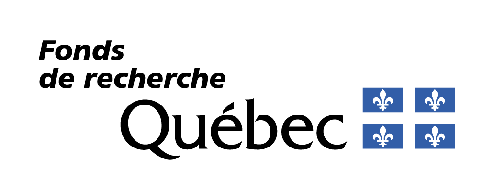
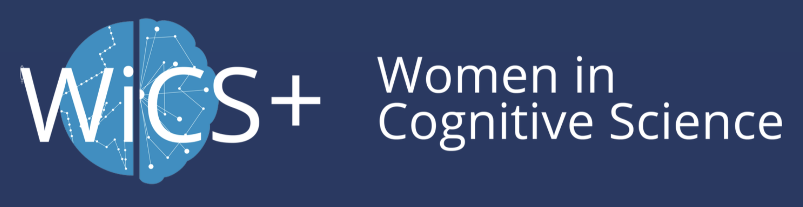
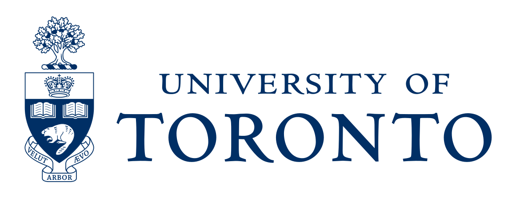
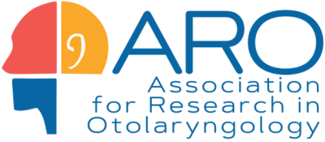
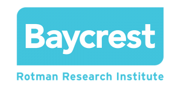
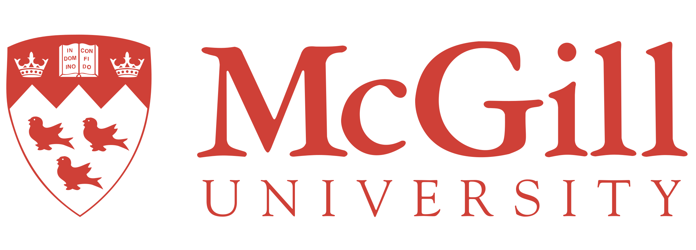

$518K+
Competitive research funding
I bring a sustained record of competitive research funding across my academic career, with over half a million dollars in funding offers as an individual applicant, including major national awards from NSERC.
RESEARCH SUPPORT
$518K+
Competitive research funding
14
Research awards
10
National awards
#1
National ranking in Psychology
NSERC CGS-D
Selected funding agencies & institutions



| Year | Award | Amount | Scope |
|---|---|---|---|
| 2025 | NSERC Postdoctoral Fellowship | $140,000 2 years |
National |
| 2025 | Tri-Council Postdoctoral Top-Up | $24,000 2 years |
Institutional |
| 2023 | Western University Postdoctoral Fellowship | $150,846 2 years |
Institutional |
| 2022 | Women in Cognitive Science Small Research Grant | $1,500 | National |
| 2020 |
NSERC Canada Graduate Scholarship — Doctoral
Ranked #1 nationally in Psychology
|
$105,000 3 years |
National |
| 2020 | NSERC Complex Dynamics Training Grant Declined | $26,000 | National |
| 2020 | NSERC Michael Smith Foreign Study Supplement | $6,000 | National |
| 2020 | Mitacs Globalink Research Award | $6,000 | National |
| 2019 | NSERC Complex Dynamics Training Grant | $26,000 | National |
| 2019 | NSERC CGS-M Declined | $17,500 | National |
| 2018 | FRQNT Undergraduate Student Research Award | $2,000 | Provincial |
| 2018 | NSERC Undergraduate Student Research Award | $5,600 | National |
| 2017 | FRQNT Undergraduate Student Research Award | $2,000 | Provincial |
| 2017 | NSERC Undergraduate Student Research Award | $5,600 | National |
RECOGNITION



| Year | Award | Amount | Scope |
|---|---|---|---|
| 2025 | Travel Award, Association for Research in Otolaryngology (ARO) | $750 | International |
| 2024 | Accessible Presentation Award, Association for Research in Otolaryngology (ARO) | — | International |
| 2024 | Top Three Best Postdoc Talk, Association for Research in Otolaryngology (ARO) | — | International |
| 2023 | Jack and Rita Catherall Fund, Rotman Research Institute at Baycrest | $500 | Institutional |
| 2022 | Jack and Rita Catherall Fund, Rotman Research Institute at Baycrest | $500 | Institutional |
| 2021 | Top Cited Article, WIREs Cognitive Science | — | International |
| 2020 | Top Cited Article, WIREs Cognitive Science | — | International |
| 2019 | Finkler Graduate Fellowship, Rotman Research Institute at Baycrest | $3,000 | Institutional |
| 2019 | Ebbinghaus Award — Best Talk, Toronto Area Memory Group Meeting (TAMEG) | $75 and invited manuscript submission | Regional |
| 2018 | Faculty of Arts & Science Admissions Award, University of Toronto | $5,000 | Institutional |
| 2017 | Celia Hendler Scholarship in Psychology, McGill University | $3,545 | Institutional |
| 2016–2018 | Dean’s Honour List (Top 10%), McGill University | — | Institutional |
| 2014–2015 | Dean’s Honour Roll (90%+ Average), Vanier College | — | Institutional |
| 2013 | Governor General's Academic Medal (Highest graduating average), F.A.C.E. School | — | Institutional |